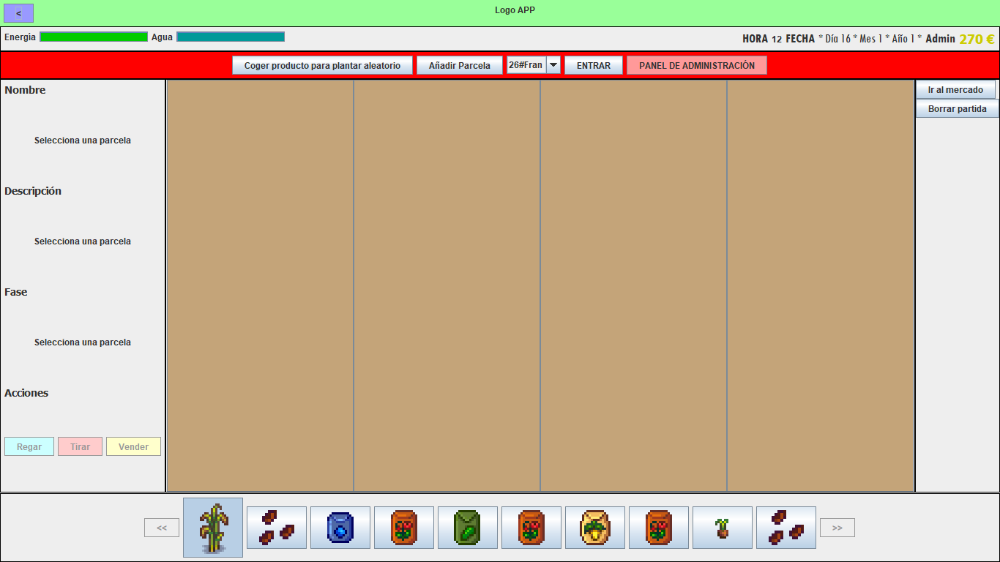
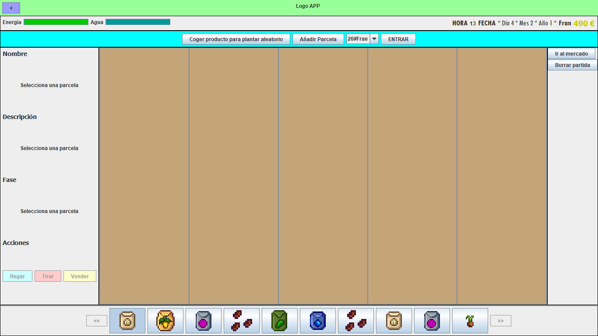

El administrador tendrá algunos privilegios como modificar algunos datos de otras partidas, ver varios informes o incluso infiltrarse en el huerto de otro usuario para realizar el cambio que le apetezca. Con los botones de la parte de arriba del huerto podrá realizar estas acciones.
Cuando el administrador se infiltre en otro huerto, aparecerá una banda azul para indicarlo.
